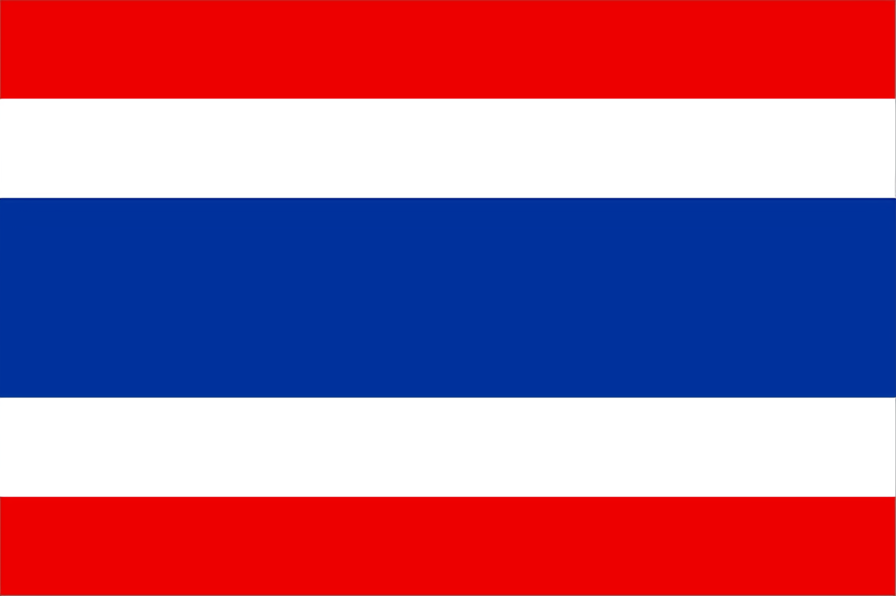
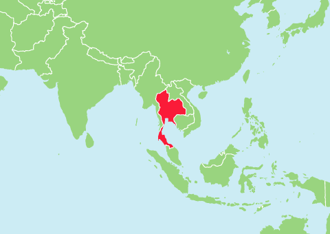
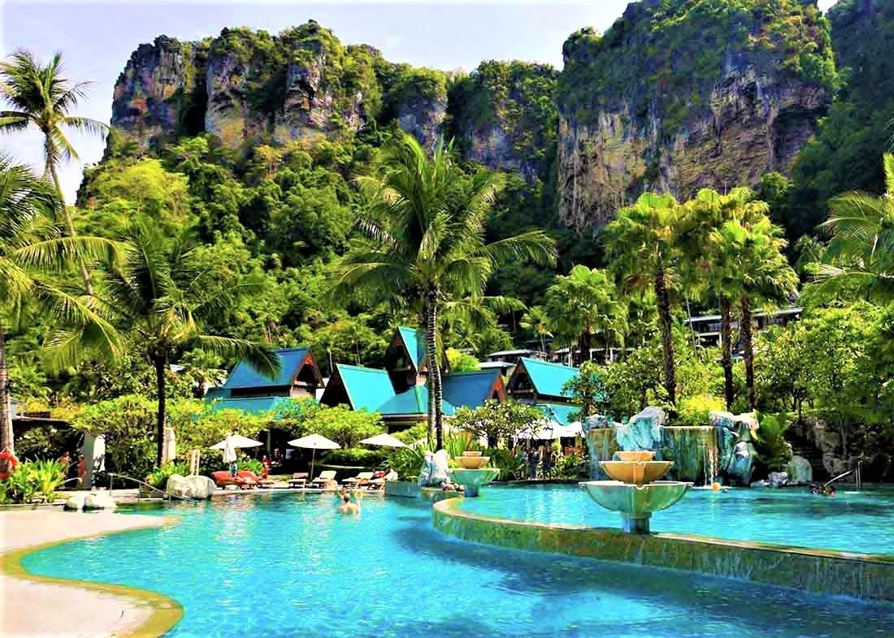

タイ
タイの位置と分布
タイ王国（タイ）は、東南アジアの中心部に位置しています。国境は北でミャンマーとラオス、東でカンボジア、南でマレーシア、西でミャンマーと接しています。タイの首都はバンコクで、国の政治、経済、文化の中心です。
タイの地理的特徴
タイは、北部の山岳地帯から中央の広大な平野、南部の熱帯雨林と海岸線まで、様々な地形が広がっています。地理的には、以下の特徴があります：
- 北部：山岳地帯が広がり、森林が豊かです。
- 中央部：チャオプラヤ川流域の肥沃な平野が広がっています。
- 南部：熱帯雨林が広がり、アンダマン海と南シナ海に面しています。
- 東北部：東北部は、タイの5つの地域の中で最も広大な地域です。
人間と環境との相互関係
タイでは、人間と自然環境が密接に関わり合っています。具体的には以下のような相互作用があります：
- 農業：タイの中央部は稲作の主要地域であり、農業活動が盛んです。
- 観光業：自然景観や歴史的遺産が観光の重要な資源となっており、観光業が経済に大きな影響を与えています。
- 都市化：バンコクなどの都市部では、急速な都市化が進行しており、環境問題が顕在化しています。
- 環境保護：森林保護や野生動物の保護などの取り組みが行われていますが、開発と保護のバランスが課題です。 
- 上の画像はタイのクラビ
地域別の特徴
タイの地域ごとに異なる特色があります：
- 北部：チェンマイやチェンライなどの都市があり、伝統的な文化や工芸品が有名です。
- 東北部：「イサーン」と呼ばれるこの地域は、タイの最も大きな農業地帯であり、特に稲作が盛んです。
- 中部：バンコクを中心とした商業、経済の中心地で、多くの企業やビジネスが集まっています。
- 南部：リゾート地やビーチが有名で、観光地として人気があります。

SDGs（持続可能な開発目標）への取り組み
タイは国際的な持続可能な開発目標（SDGs）に対して積極的に取り組んでいます。主な取り組みには以下のようなものがあります：

- 貧困撲滅：貧困削減のための社会福祉プログラムや教育支援が行われています。
- 質の高い教育：教育の機会を広げるための政策やプロジェクトが実施されています。
- 環境保護：森林再生プロジェクトや野生動物保護活動が進められています。
- 気候変動対策：再生可能エネルギーの導入や温室効果ガスの削減に向けた政策が進められています。